56 slides following the full interim report, with their narration. The same text is the long video's narration and captions and the deck's speaker notes.
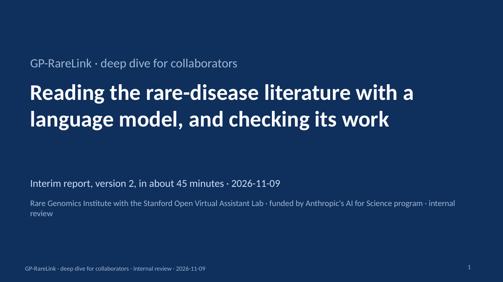
Slide 1. Welcome to the GP-RareLink deep dive. This is the long version of the project overview: about three quarters of an hour, following the full interim report section by section. GP-RareLink is run by the Rare Genomics Institute with the Stanford Open Virtual Assistant Lab and funded by Anthropic's AI for Science program. The project reads published case reports on six rare genetic diseases with a language model, turns them into structured per-individual records in which every value carries a quote from its source, and then checks those records against ClinVar and OMIM, which the model never sees. What you will hear is an interim report for internal review. The numbers are real and traceable; the conclusions are provisional, and the report says plainly which questions remain open.
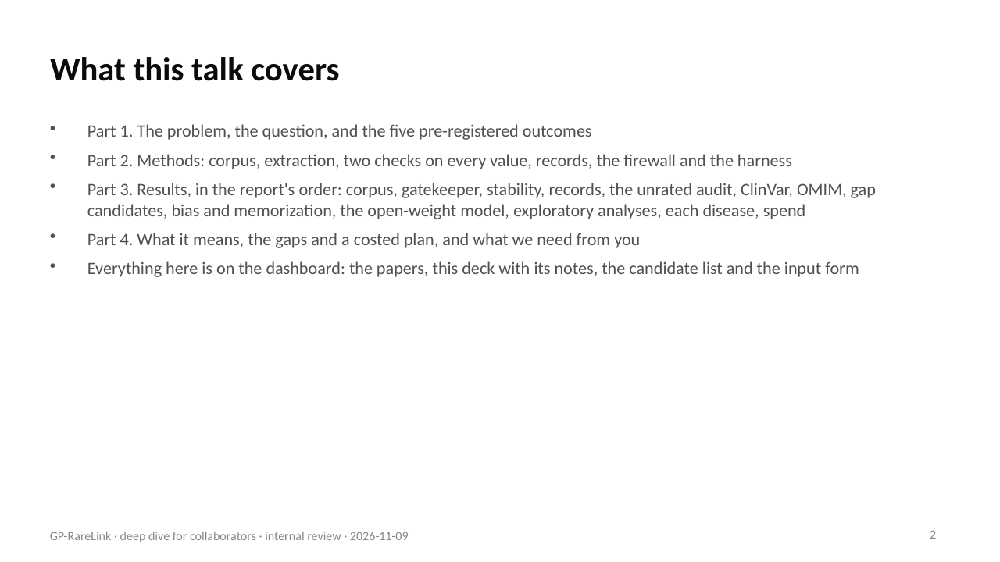
Slide 2. The talk has four parts. Part one sets out the problem and the question, and the five outcomes we committed to measure before the main run. Part two walks through the methods: how the corpus was built, how the model reads a paper, how every value is checked twice, how records are made, and how the answer key is kept behind a firewall. Part three is the results, in the order of the report: the corpus, extraction and the gatekeeper, stability, the records, the human audit that has not yet happened, concordance with ClinVar, the OMIM holdout, the gap candidates, the bias arm, the open-weight comparison, the exploratory analyses, one slide per disease, and spend. Part four is what it all means, the gaps in the study and a costed plan to close them, and what we are asking of you. If you prefer to read, the dashboard has the eight-page paper and the full report with every table and interval.
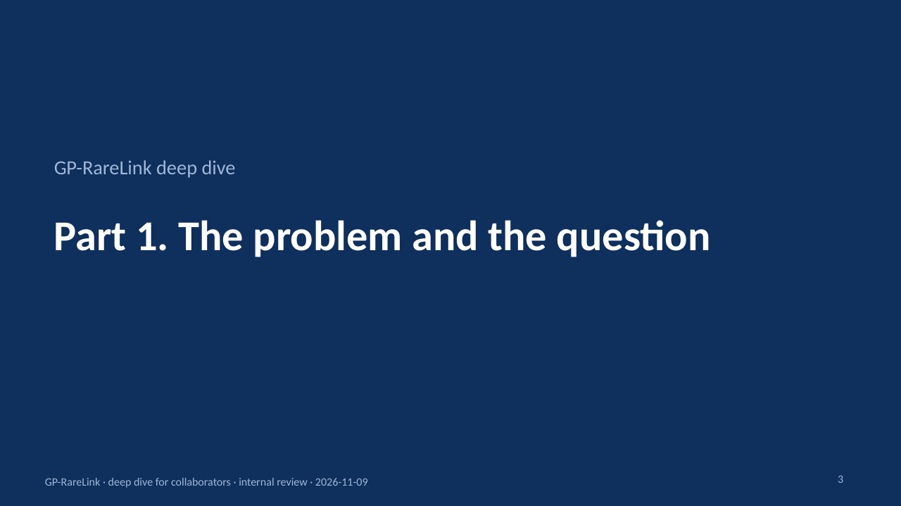
Slide 3. Part one. The problem and the question.
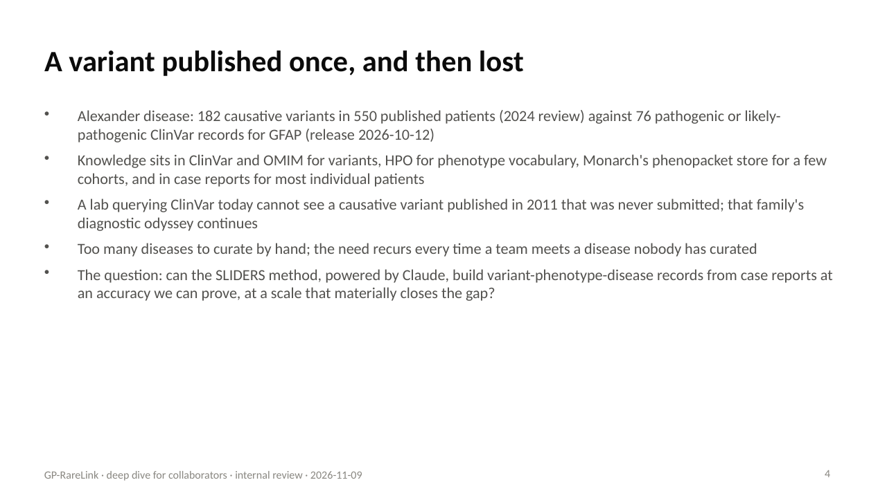
Slide 4. Here is the problem in one example. For Alexander disease, a 2024 review counts 182 distinct causative variants in 550 published patients. ClinVar, the public database laboratories query when they interpret a test, holds 76 pathogenic or likely pathogenic records for the gene in the release of 2026-10-12. The rest were published, once, and never submitted. A laboratory testing the next child searches ClinVar and finds nothing. The knowledge exists, but it is scattered across thousands of papers in prose and tables that no database can query, and hand curation has never kept up. The project asks whether a language model, reading with strict rules, can do the first pass of curation at an accuracy we can measure rather than assume, and whether that closes a meaningful part of the gap.
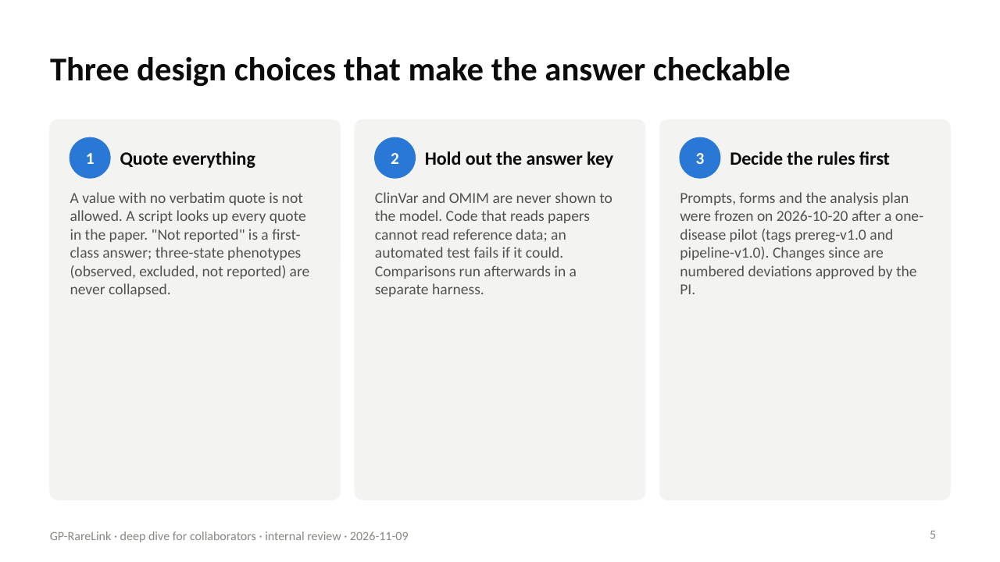
Slide 5. Three design choices make the answer checkable. First, quote everything: a value without a verbatim quote from the paper is not allowed, a script confirms every quote is really in the text, and not reported is a valid answer, so a paper's silence is never turned into a no. Second, hold out the answer key: ClinVar and OMIM are never shown to the model, code that reads papers cannot read them, a test in the repository fails if it could, and the comparison happens afterwards in a separate harness. Third, decide the rules first: the prompts, the forms and the analysis plan were frozen on the twentieth of October 2026, after a one-disease pilot, and every change since is logged as a numbered deviation approved by the principal investigator.
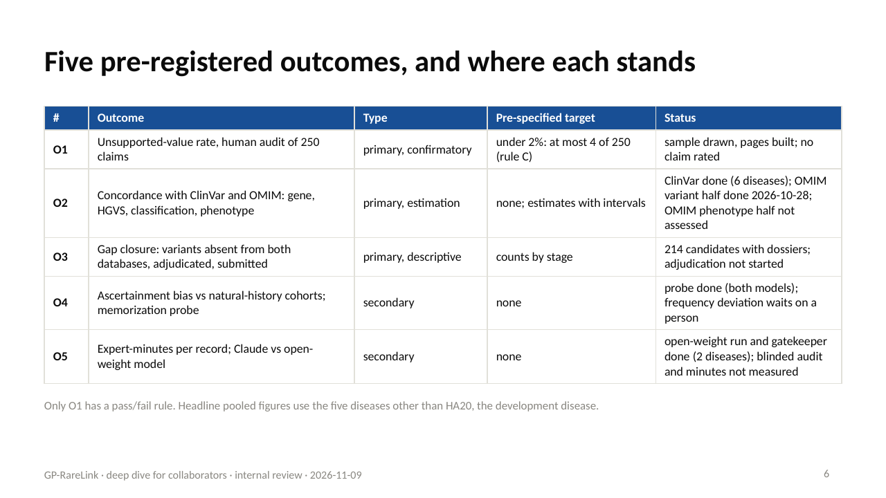
Slide 6. The plan registers five outcomes. O1, the only confirmatory one, is a human audit of 250 extracted values against their quoted evidence; it passes if at most four are unsupported. The sample is drawn and the blinded rating pages are built, but no claim has been rated. O2 is concordance with ClinVar and OMIM on gene, variant, classification and phenotype, reported as estimates with intervals and no pass or fail. The ClinVar half is done for all six diseases and the OMIM half was done on the twenty-eighth of October against frozen entry pages. O3 is gap closure: 214 candidates are listed with dossiers, none adjudicated. O4 is ascertainment bias against natural-history cohorts, with a memorization probe; the probe is done, the frequency comparison waits on a person. O5 is efficiency and the comparison with an open-weight model; the run and gatekeeper are done on two diseases, the blinded audit is not.
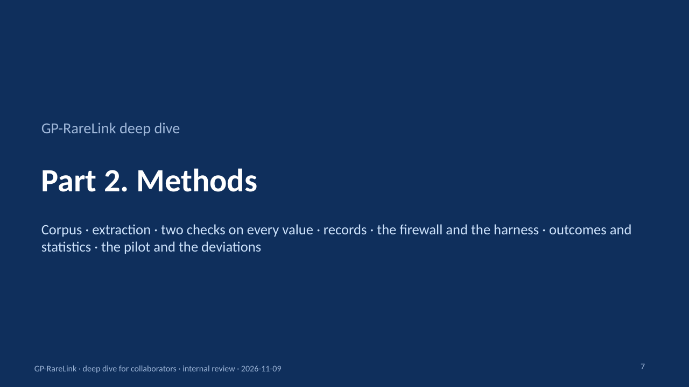
Slide 7. Part two. Methods.
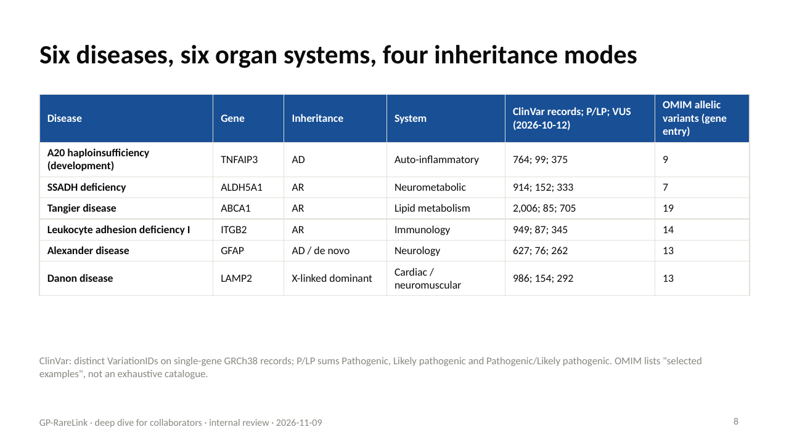
Slide 8. The six diseases were chosen to span inheritance modes and organ systems, and all are absent from the main public collection of phenopackets. A20 haploinsufficiency is autosomal dominant and auto-inflammatory; SSADH deficiency is recessive and neurometabolic; Tangier disease is recessive and a lipid disorder; leukocyte adhesion deficiency type one is recessive and immunological; Alexander disease is dominant, usually de novo, and a leukodystrophy; Danon disease is X-linked and cardiac and neuromuscular. The ClinVar counts are distinct variants on single-gene records in one dated release, and the OMIM counts are the allelic variants on each gene's entry page, frozen on the twenty-eighth of October. OMIM calls its list selected examples, so it is a sample, not a catalogue. A20 haploinsufficiency was the development disease: every extraction rule was tuned on it during the pilot, so its results flatter the pipeline and the other five form the confirmatory set.
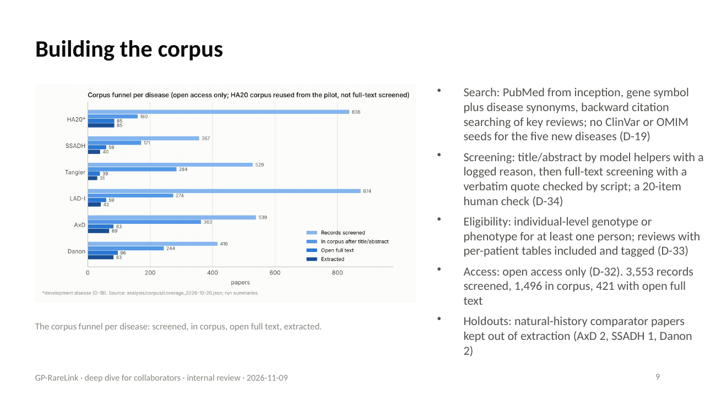
Slide 9. The corpus came from PubMed searches from inception to a recorded date, gene symbol plus disease names and synonyms, with backward citation searching of the key reviews. No ClinVar or OMIM citation lists were used as seeds for the five new diseases. Screening ran in two passes: title and abstract screening by model helpers with a logged reason per record, then full-text screening of every open full text with a verbatim evidence quote checked by script; a twenty-item human check settled the screening calls. Eligible papers report individual-level genotype or phenotype for at least one person with the disease; reviews with a per-patient table are included and their people tagged as secondary-source. Access was open access only: PubMed Central, Europe PMC and open copies found through Unpaywall, with no institutional subscriptions. In all, 3,553 records were screened, 1,496 entered the corpus, and 421 had open full text. Natural-history papers for the bias arm were held out of the extraction corpus.
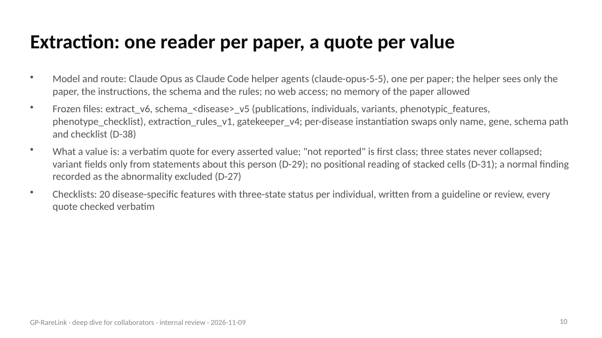
Slide 10. Extraction runs as Claude Code helper agents on the funded account: one helper per paper, reading only the paper, the instruction file, the schema and the rules file, with no web access and an instruction to use nothing it remembers about the paper. The frozen files are the extraction instructions version six, a five-table schema covering publications, individuals, variants, phenotypic features and a phenotype checklist, a rules file, and the gatekeeper instructions version four. For the five new diseases the prompt and schema were instantiated by script, swapping only the disease name, the gene symbol, the schema path and a twenty-item checklist. Every asserted value carries a verbatim quote; not reported carries no quote; three-state phenotypes are never collapsed; variant fields are taken only from statements about this person; values stacked in multi-patient cells are never assigned by position; and a normal finding is recorded as the abnormality it rules out, marked excluded. Each disease has twenty disease-specific checklist features, each with a three-state status for every individual, written from a consensus guideline or review with every quote checked.
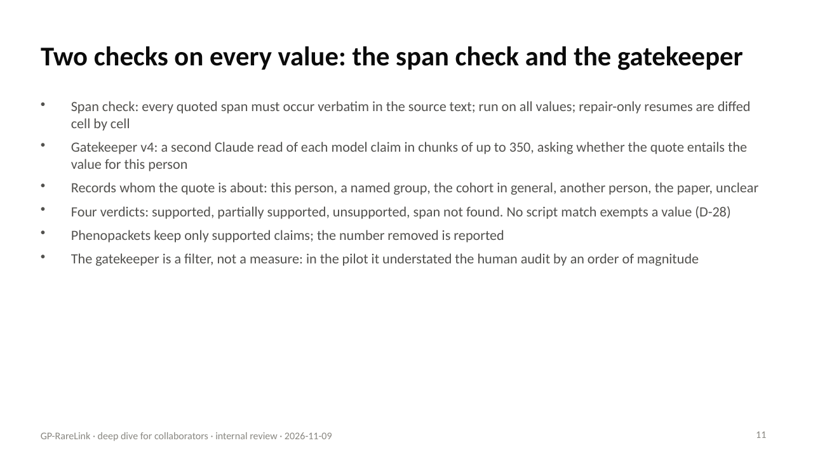
Slide 11. Every value is checked twice. The span check is deterministic: it looks up every quoted span in the source text and demands a verbatim match, on all values, not a sample. A helper that left quotes empty was resumed for a repair-only pass, and each repair was diffed to show that only the target cells changed. The gatekeeper is a second model read. For each claim that is not bookkeeping, a helper asks whether the quote entails the value for the person the row is about. It records whom the quote is actually about, this person, a named group, the cohort, another person, the paper, or unclear, and gives one of four verdicts: supported, partially supported, unsupported, or span not found. No value is exempted because its text matches its quote. Phenopackets keep only claims judged supported, and the count removed is reported. One sentence from the plan matters more than any other here: the gatekeeper is a filter, not a measure. In the pilot its own unsupported rate understated the human audit's by an order of magnitude.
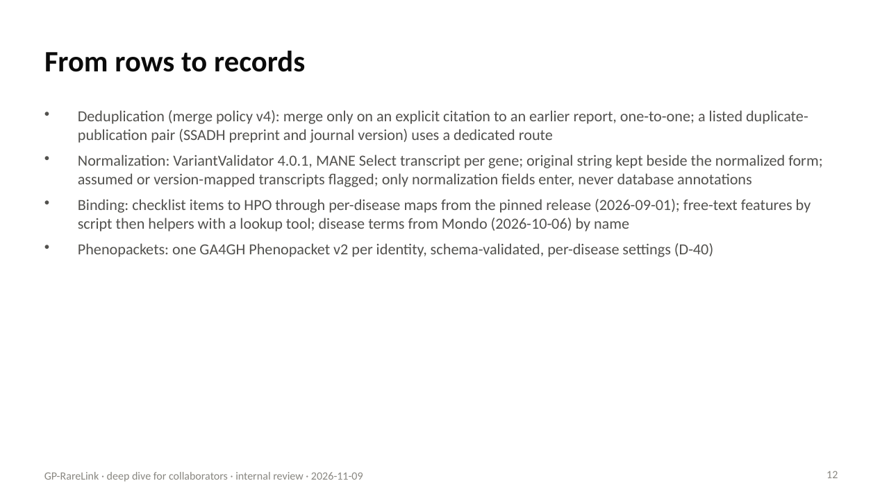
Slide 12. The extracted rows become records in four steps. Deduplication merges only on an explicit citation tying a person to an earlier report, one to one; the pilot's sex-and-onset route was dropped after it produced all six false merges of ninety-three. Normalization runs every variant through VariantValidator on the MANE Select transcript for the gene, keeps the original string beside the normalized form, flags transcripts that were assumed or version-mapped, and passes only normalization fields, never database annotations. Binding maps checklist items to HPO terms through per-disease maps built from a pinned HPO release, binds free-text features first by script and then by helpers with a lookup tool, and takes disease terms from Mondo by name, never through an OMIM cross-reference. The output is one GA4GH phenopacket per identity, validated against the schema, with per-disease settings for gene, transcript, Mondo term and checklist map.
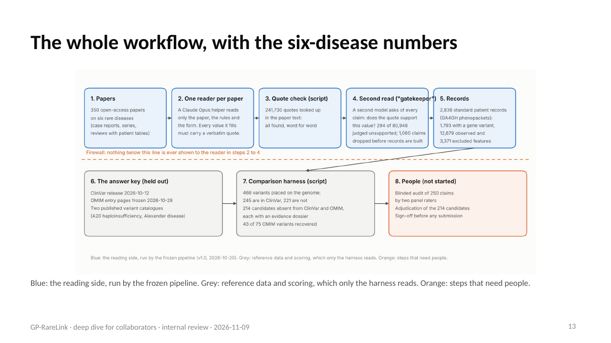
Slide 13. Putting it together: the five blue boxes are the reading side, run by the frozen pipeline. Papers go to one reader each; every value gets a quote; the script checks every quote; the gatekeeper re-reads every claim; the surviving claims become records. The dashed orange line is the firewall. Below it, in grey, is the answer key the reader never sees: a dated ClinVar release, the OMIM entry pages frozen on the twenty-eighth of October, and two published variant catalogues. The comparison harness reads the records and the answer key and lists what the databases are missing. The orange box on the right is what has not happened: the blinded human audit and the expert adjudication of the candidates. That is where you come in, and we will return to it at the end.
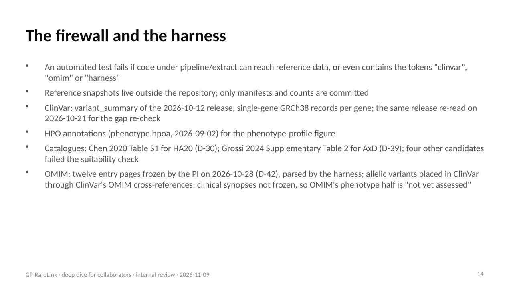
Slide 14. Ground-truth isolation is enforced, not promised. Code under the extraction package never reads reference data, and an automated test fails if any such path, loader, or even the tokens ClinVar, OMIM or harness appear there. Reference snapshots live outside the repository, and only their manifests and counts are committed. The harness reads the extracted records and the snapshots. For ClinVar that is the variant summary file of the twelfth of October release, restricted to single-gene records on the current genome build. For phenotypes it uses the HPO annotation file. Two published catalogues serve as completeness benchmarks, Chen 2020 for A20 haploinsufficiency and Grossi 2024 for Alexander disease; the other four candidate catalogues failed the registered suitability check. For OMIM, the principal investigator printed the six phenotype and six gene entry pages on the twenty-eighth of October; a harness script parses them, and each allelic variant was placed in ClinVar through ClinVar's own OMIM cross-references. OMIM's clinical synopsis pages were not frozen, so OMIM's phenotype half is not yet assessed.
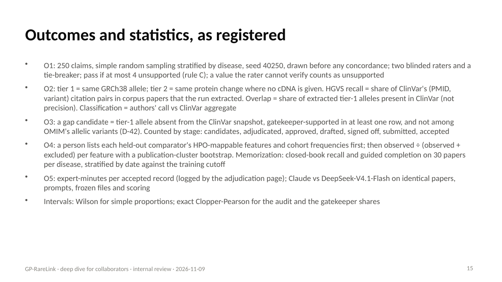
Slide 15. The statistics follow the registered plan. For O1, 250 claims were drawn by simple random sampling stratified by disease from the claims the gatekeeper judged supported, by script with a fixed seed and before any concordance was run. Two panel members rate blind on pages that never show the gatekeeper's verdict; a third resolves disagreements; the pass rule is at most four unsupported. For O2, tier one is the same genomic allele; tier two is the same protein change where a paper gives no cDNA. HGVS recall is the share of ClinVar's own paper-and-variant citation pairs, restricted to corpus papers, that the run extracted from that paper. Overlap is the share of extracted alleles present in ClinVar, which is not precision. Classification compares the authors' call with ClinVar's aggregate among stated values. Intervals are Wilson for proportions and exact for the audit and the gatekeeper shares. For O3, a gap candidate is a tier-one allele absent from the ClinVar snapshot, with identifying values the gatekeeper judged supported in at least one row, and, since the OMIM check, not listed among OMIM's allelic variants. For O4, a person lists each comparator's cohort frequencies before any literature frequency is computed. For O5, the open-weight model runs the same papers, prompts and scoring.
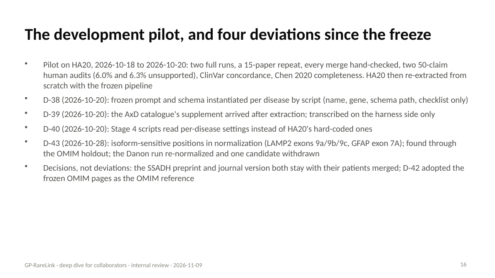
Slide 16. A one-disease pilot on A20 haploinsufficiency ran from the eighteenth to the twentieth of October: two full extraction runs, a fifteen-paper repeat, a hand check of every merge, two fifty-claim human audits by the principal investigator, ClinVar concordance and the Chen 2020 completeness check. Its findings set the rules frozen as extraction version six and gatekeeper version four. The disease was then re-extracted from scratch with the frozen pipeline; the pilot's own records are not used anywhere in the report. Four dated deviations followed, each approved before it took effect. D-38 instantiated the frozen prompt and schema per disease. D-39 transcribed the Alexander disease catalogue on the harness side after its supplement arrived late. D-40 made the record-building scripts read per-disease settings. And D-43, found through the OMIM holdout, added isoform-sensitive positions to normalization: where a gene has alternative coding exons and a paper names no transcript, the paper's own exon label chooses the transcript, or the variant gets no genomic key. We will see the case that forced it.
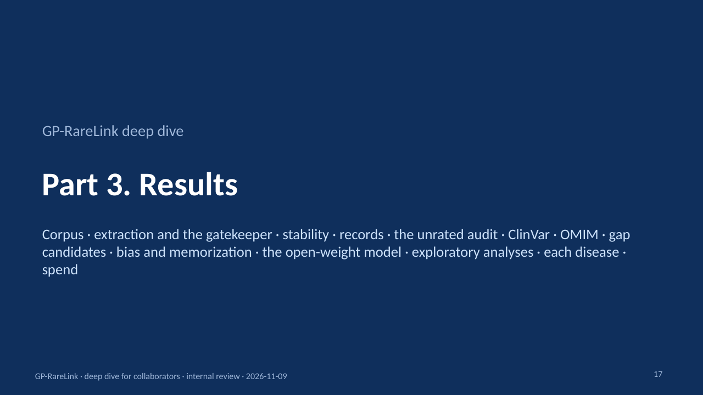
Slide 17. Part three. Results, in the order of the report.
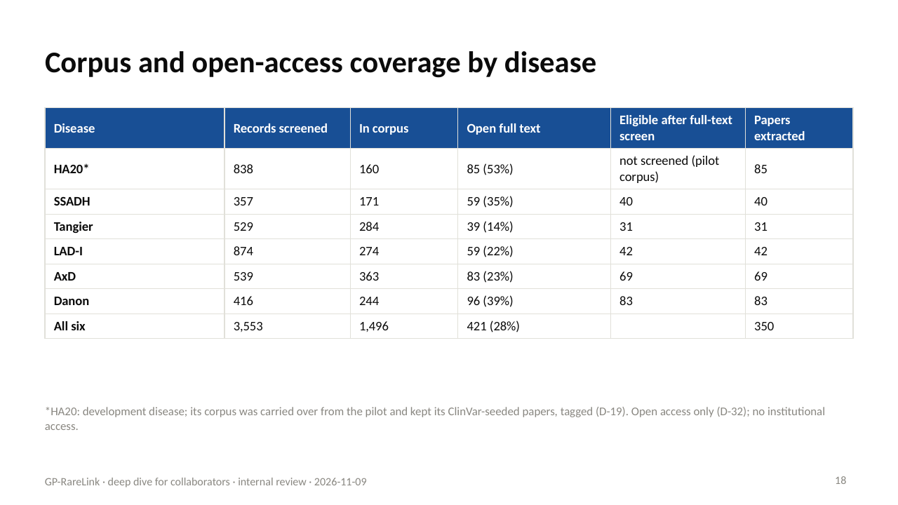
Slide 18. The corpus table shows the binding constraint of the whole study. Across the six diseases, 3,553 records were screened and 1,496 entered the corpus, but only 421 had open full text, from 14 percent for Tangier disease to 53 percent for A20 haploinsufficiency. Every disease cleared the registered floor of fifteen eligible primary papers, so no substitute disease was needed, and 350 papers were extracted in all. But paywalled papers are not a random subset. For A20 haploinsufficiency they include the two largest sources of the Chen 2020 benchmark, and for the other diseases the catalogue reviews' own source papers are often closed. Keep this in mind for every completeness and recall figure that follows: they are measured on what could be read.
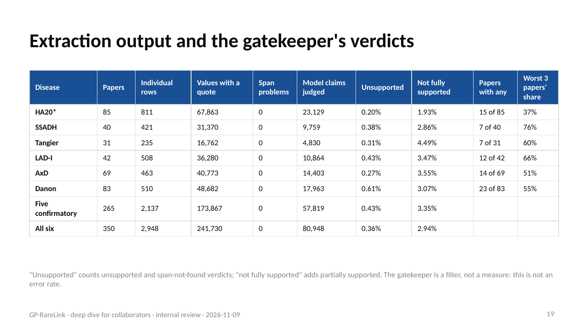
Slide 19. Now the extraction itself. 350 papers produced 2,948 individual rows and 2,233 variant rows, and 241,730 values with a quote. The span check found every one of those quotes verbatim in its paper: zero problems in every disease, so the fabricated-span count is zero by construction and by check. The gatekeeper judged 80,948 model claims. It found 294 unsupported, which is 0.36 percent; on the five confirmatory diseases, 0.43 percent, with an exact interval from 0.38 to 0.49. Per disease the share runs from 0.20 to 0.61 percent. Adding partially supported verdicts gives about three percent not fully supported. And the failures cluster: in five of six diseases the three worst papers hold half or more of that disease's unsupported claims. This is the filter's reading, and it is not an error rate.
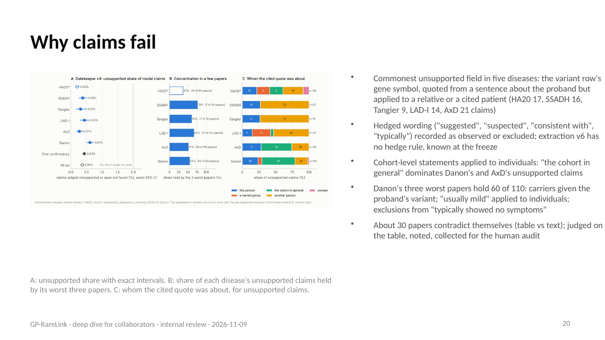
Slide 20. Why do claims fail? The commonest unsupported field in five diseases is the gene symbol on a variant row: a relative's or a cited patient's variant written into the proband's row from a sentence that mentions both. Extraction version five's rule, variant fields only from this person, holds for probands and slips for relatives the paper says carry the same variant. The second pattern is hedged wording, suggested, suspected, consistent with, typically, recorded as observed or excluded; extraction version six has no hedge rule, a gap known and left in place at the freeze. The third is cohort-level statements applied to individuals; the cohort in general dominates the unsupported claims in Danon and Alexander disease. Danon's three worst papers hold 60 of its 110 unsupported claims: variant and diagnosis fields given to eight family carriers when the paper names only the proband, usually mild applied to individuals, and exclusions resting on typically showed no symptoms. The gatekeeper also flagged about thirty papers whose table and text disagree; those claims were judged on the table, noted, and collected for the human audit.
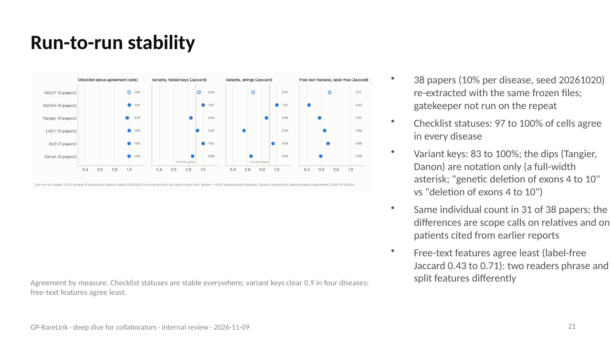
Slide 21. How stable is the reading? A random ten percent of each disease's papers, 38 in all, was re-extracted with the same frozen files and compared with the run of record. Checklist statuses agree on 97 to 100 percent of cells in every disease: fixing the feature names removes the wording variance that free-text rows show. Variant keys agree at 83 to 100 percent; the two lowest, Tangier and Danon, are each one paper where both runs recorded the same variants in different notation. Individual counts differ in 7 of 38 papers, from scope calls on relatives and on patients cited from earlier reports, the same issue the pilot found in cohort papers. That is the measure to watch when the records are used for counting people.
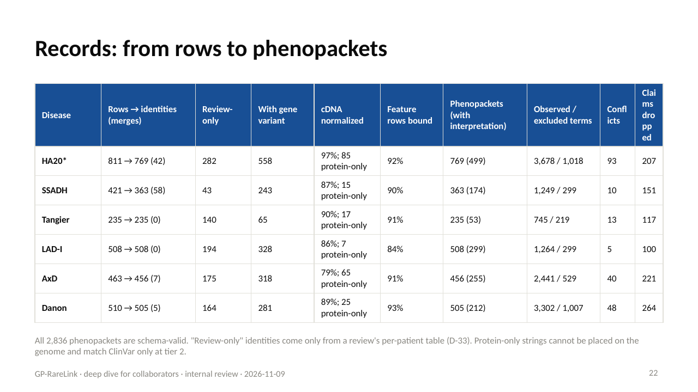
Slide 22. The records table. 2,948 rows became 2,836 identities after 112 merges, and 2,836 phenopackets, all schema-valid, 1,492 of them carrying a genomic interpretation. SSADH deficiency's 58 merges are all the duplicate study; Tangier and LAD-I have no citation merges at all, which is more likely a limit of the citation route than a fact about those literatures. Normalization of cDNA descriptions ranges from 79 percent in Alexander disease, where papers print cDNA without the c prefix and use legacy numbering, to 97 percent. Protein-only strings can match ClinVar only at tier two. HPO binding covers 84 to 93 percent of feature rows. The records hold 12,679 observed and 3,371 excluded terms; conflicts, the same term observed and excluded for one identity from different papers, are few and are kept visible rather than resolved. The gatekeeper removed 1,060 claims before the records were built.
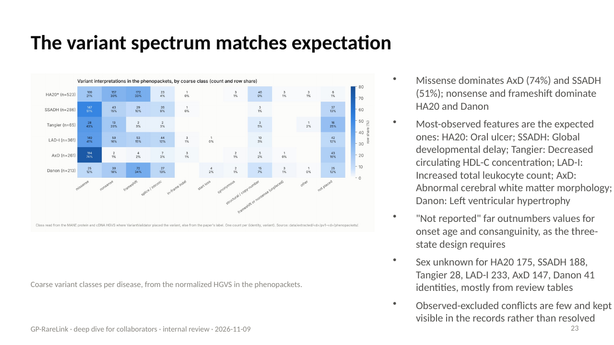
Slide 23. A sanity check on the records: the variant spectrum per disease matches what the biology predicts. Missense variants dominate Alexander disease, a gain-of-function leukodystrophy, and SSADH deficiency, while nonsense and frameshift variants dominate A20 haploinsufficiency and Danon disease, which are loss-of-function diseases. The most frequently observed features per disease are also the expected ones: oral ulcers and recurrent fever in A20 haploinsufficiency, developmental delay and seizures in SSADH deficiency, low HDL cholesterol in Tangier disease, leukocytosis and omphalitis in LAD-I, white matter abnormality in Alexander disease, left ventricular hypertrophy in Danon disease. And the records carry not reported far more often than a value, as the three-state design requires: onset age is asserted for a minority of individuals and consanguinity for very few. Sex is unknown for a sizeable share of identities, mostly people from review tables.
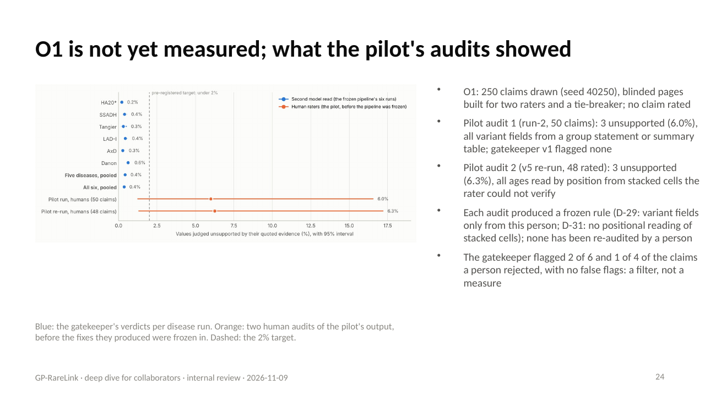
Slide 24. Now the most important slide in the results. The primary outcome, the human audit of 250 claims, has not been measured. The sample is drawn, the two blinded rating pages are built, and no claim has been rated. What we do have are the pilot's two audits, before the pipeline was frozen. The first, fifty claims from the second pilot run, found 3 unsupported, 6.0 percent, all variant fields taken from a group statement or a summary table. The gatekeeper of the day flagged none of them. The second, after fixes, 48 claims rated from a twenty-paper re-run, found 3 unsupported again, 6.3 percent, all ages read by position from stacked multi-patient cells that the rater could not verify. Each audit exposed an error class, and each class now has a rule in the frozen pipeline. But nothing has been re-audited by a person since. So the machine's 0.43 percent sits far below the humans' six, and until the audit is rated no accuracy claim can be made for the frozen pipeline.
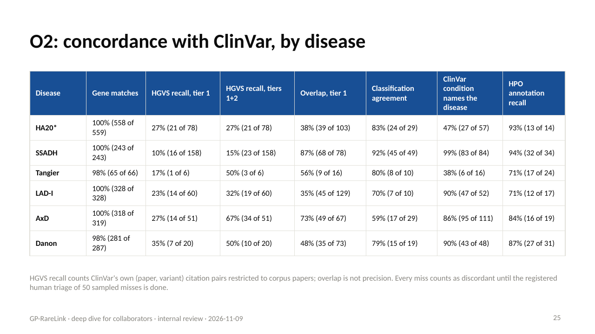
Slide 25. Concordance with ClinVar. Gene agreement is near ceiling by design. HGVS recall, the share of ClinVar's own citation pairs in our papers that the run extracted, is low: at tier one from 10 to 35 percent, and from 15 to 67 percent when protein-level matches are allowed. Overlap, the share of our placed variants that ClinVar already holds, runs from 35 percent in LAD-I to 87 percent in SSADH deficiency, a well-covered gene. Where authors state a classification, it agrees with ClinVar's aggregate 59 to 92 percent of the time, and the disagreements run almost entirely in one direction: authors say pathogenic, ClinVar says uncertain. HPO annotation recall, whether each annotated feature was seen in at least one person, is high. The denominators matter: Tangier's recall rests on six citation pairs.
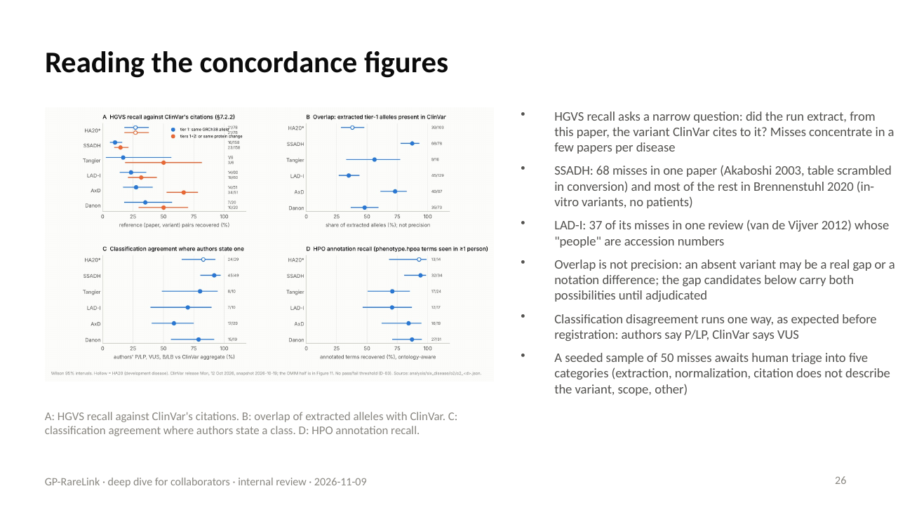
Slide 26. How to read those numbers. HGVS recall is low, but it measures something specific: whether the run extracted, from a given paper, a variant that ClinVar cites to that paper. The misses concentrate in a handful of papers. In SSADH deficiency two papers hold almost all of them: Akaboshi 2003, whose table was scrambled in PDF conversion so that only a dozen of fifty-four families were extracted, and Brennenstuhl 2020, which tested variants in vitro and describes no patients. In LAD-I one review, a mutation update whose people are database accession numbers, holds thirty-seven of forty-one misses. These are scope and input problems more than reading errors, but that is a hypothesis until the registered triage of fifty sampled misses is done by a person. Overlap is not precision: a variant absent from ClinVar may be a real gap or a notation difference. Classification disagreement runs in one direction, consistent with an expectation stated before registration: authors call variants pathogenic that ClinVar still lists as uncertain.
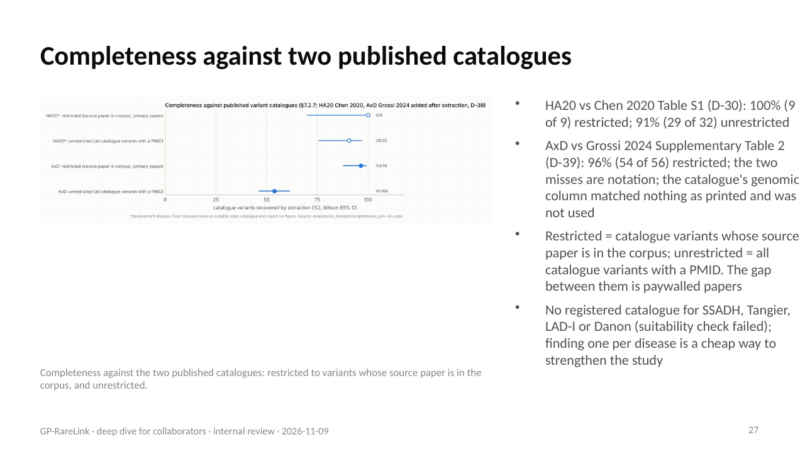
Slide 27. Two expert catalogues give the strongest completeness check we have. For A20 haploinsufficiency, Chen 2020's table: 100% (9 of 9) of the catalogue's variants whose source paper was in the corpus were recovered. For Alexander disease, Grossi 2024's supplementary table: 96% (54 of 56), and the two misses are notation. Where the pipeline read the source paper, it found the variant. The unrestricted figures are lower only because most of the catalogues' source papers are paywalled, which is the access constraint again. The other four diseases have no registered catalogue: their candidate catalogues had no per-variant table naming sources, or were not open. Extending catalogue-based completeness to those diseases is one of the cheapest ways to strengthen the study, and it needs no model spend to speak of.
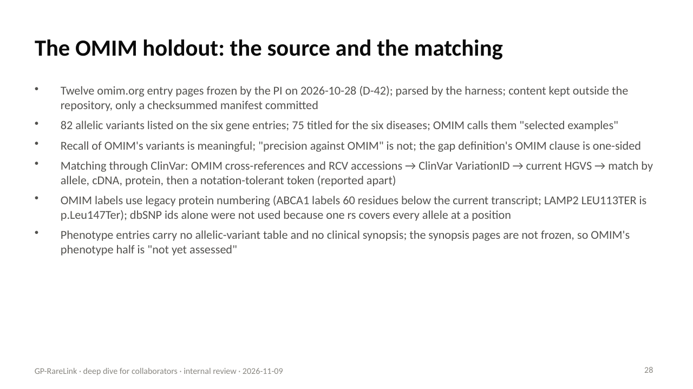
Slide 28. OMIM entered the study on the twenty-eighth of October, when the principal investigator printed the six phenotype entries and the six gene entries to PDF, because omim.org refuses automated reads from our environment and no API key is in place. A harness script parses each page: titles, cross-references, the allelic variants with OMIM's legacy labels, their dbSNP and ClinVar accessions, the papers each narrative cites, and the edit dates. The content stays outside the repository because OMIM's terms restrict redistribution. The gene entries list 82 allelic variants, 75 of them titled for our six diseases. OMIM calls these selected examples: a curated sample of the literature, not a catalogue. So recall of OMIM's variants is the meaningful direction, and precision against OMIM is not. Matching went through ClinVar. Each allelic variant was placed in ClinVar through ClinVar's own OMIM cross-reference or the accessions OMIM prints; ClinVar's title then gives current HGVS. That was necessary because OMIM's own labels use legacy protein numbering: ABCA1 labels sit sixty residues below the current transcript, and a LAMP2 label reads leucine 113 where the current numbering is 147.
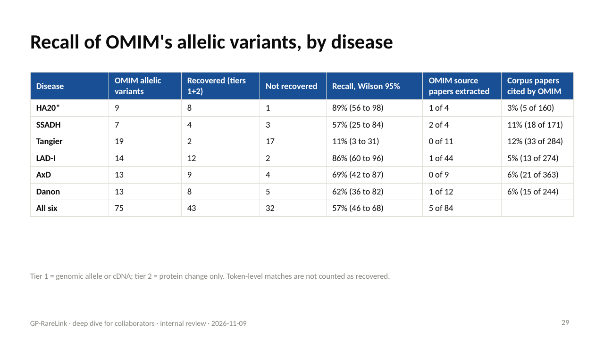
Slide 29. The result: the run recovered 57 percent, 43 of 75 of the variants OMIM lists for these diseases, with a Wilson interval from 46 to 68 percent. By disease it runs from 89 percent, 8 of 9 for A20 haploinsufficiency and 86 percent, 12 of 14 for LAD-I down to 11 percent, 2 of 19 for Tangier disease, whose allelic variants come from the gene-discovery papers of 1999 to 2003, all in the corpus and all closed. The column that explains the pattern is on the right: of the 84 papers OMIM cites as sources for these variants, 5 were extracted. Where the source paper was in the run, the variant was recovered from it 8 times out of 14; the misses have named causes.
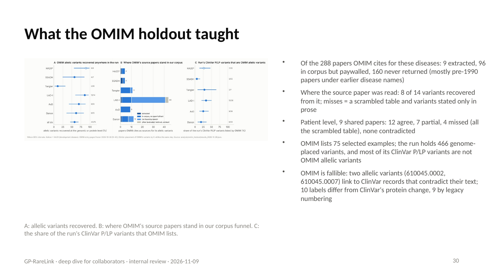
Slide 30. Four lessons. First, coverage, not reading, is the binding constraint: pooled over every paper OMIM cites for these diseases, 96 sit in our screened corpus with no open copy, 160 were never returned by our searches, and 9 were extracted. The never-returned papers are mostly pre-1990 descriptions under earlier names for the disease: LAD-I as Mo1 or LFA-1 deficiency, Danon disease as lysosomal glycogen storage with normal acid maltase, Tangier disease as familial alpha-lipoprotein deficiency. A search-term gap for diseases described before their gene. Second, where the source paper was read, the variant was usually there: 8 of 14, and the misses are a table scrambled in PDF conversion and two variants stated only in prose, a glycine to an arginine at amino acid 169, which the record keeps verbatim but cannot key. Third, at the patient level, for the 9 papers both OMIM and the run cover, our records agreed with OMIM's curated statements 12 times, were partial 7 times, and contradicted none; where they differ, the run usually has less, not something wrong. Fourth, OMIM is fallible too: two allelic variants link to ClinVar records that do not match their own text, and ten labels differ from ClinVar's protein change, nine by legacy numbering. A holdout curated by people needs the same provenance checks as our output.
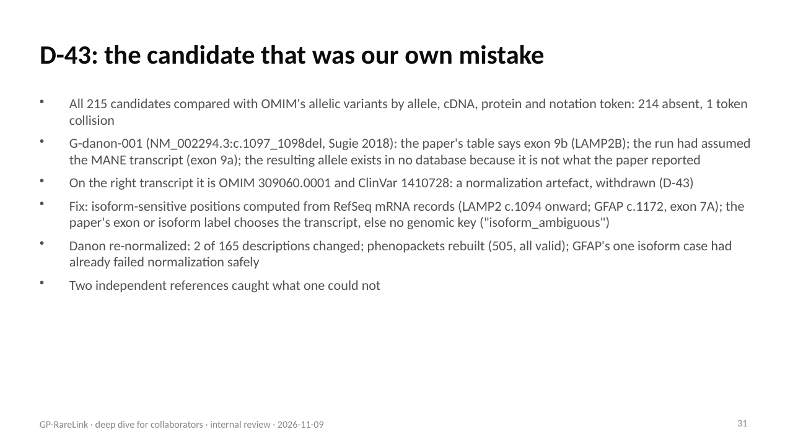
Slide 31. The OMIM check also caught an error of ours, and the story is worth a minute. Every one of the 215 gap candidates was compared with its gene's allelic variants by allele, cDNA, protein and notation token. One Danon candidate, a two-base deletion from Sugie 2018, collided with an OMIM allelic variant by its deletion token only. The paper's table places the deletion on exon 9b, the LAMP2B isoform. LAMP2 has alternative terminal exons 9a, 9b and 9c, and because the paper named no transcript the run had assumed the standard one, exon 9a. That produced a genomic allele no database holds, because it is not what the paper reported. On the right transcript, the variant is OMIM 309060.0001 and a ClinVar record. It was a normalization artefact, not a gap, and it was withdrawn the same day under deviation D-43. A new module now computes from the RefSeq records where each gene's coding isoforms diverge, and normalization lets the paper's own words choose the transcript at such positions, or assigns no genomic key. The Danon run was re-normalized; exactly two of 165 descriptions changed. Scoring against two independent references found an error that scoring against one could not.
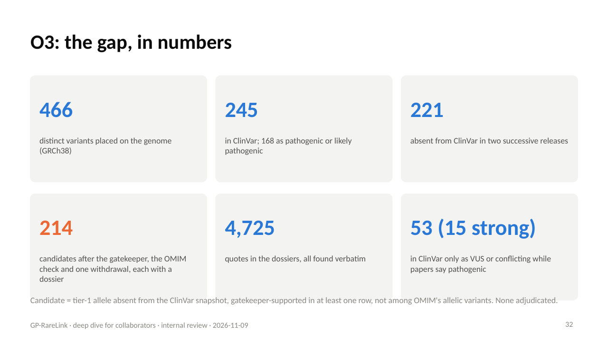
Slide 32. Now the gap itself. Across the six diseases the papers yielded 466 distinct variants placed on the genome. 245 are in ClinVar, 168 of them classified pathogenic or likely pathogenic. 221 are absent from ClinVar in two successive releases. After dropping the alleles whose every supporting row failed the gatekeeper, checking each against OMIM, and withdrawing the isoform artefact, 214 candidates remain. Each has an evidence dossier written by helpers and checked by script: every paper reporting it, every quote, found verbatim, the individuals, the authors' own classification, and flags for the panel. Separately, 53 variants that papers classify as pathogenic sit in ClinVar only as uncertain or conflicting, 15 of them with evidence the harness judged strong enough to propose a reclassification. All of these are candidates. Nothing is submitted without adjudication and the principal investigator's sign-off.
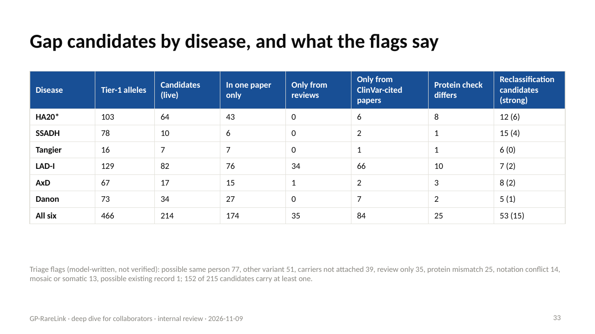
Slide 33. By disease, the candidate list is dominated by LAD-I with 82 and A20 haploinsufficiency with 64; SSADH deficiency, a well-covered gene, contributes 10 and Tangier 7. The LAD-I list needs care: 66 of its 82 candidates come only from papers ClinVar itself cites, most of them from one mutation update whose people are database accession numbers, and the protein check flags 10. Many may be numbering or normalization slips rather than gaps. Model-written flags on the dossiers mark 152 of the 215 candidates for the panel's attention: possible same person reported twice, carriers not attached to a case, notation conflicts, protein mismatches, review-only sources, mosaic or somatic calls. These are leads for adjudication, not verdicts.
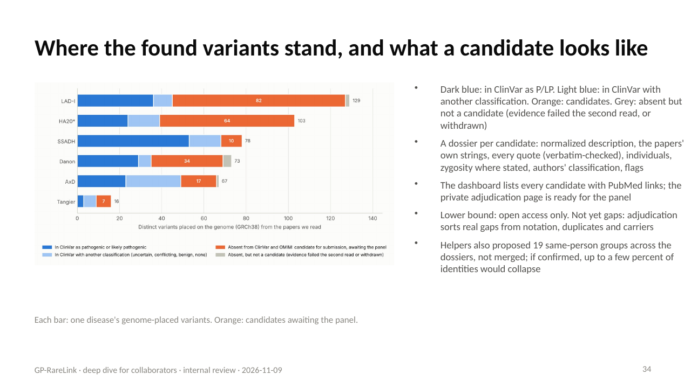
Slide 34. The bar chart shows each disease's genome-placed variants split by their standing in ClinVar: pathogenic or likely pathogenic in dark blue, another classification in light blue, candidates in orange, and absent but not a candidate in grey. A typical candidate is a frameshift or nonsense variant reported in one or two papers, with the authors calling it pathogenic. The dossier gives the panel everything in one place: the normalized description, how each paper wrote it, the quotes, the individuals, zygosity where stated, the authors' classification, and the flags. The dashboard lists all of them with PubMed links, and the adjudication page, built and private, is ready for the panel. Two cautions. The list is a lower bound set by open access. And it is not yet a list of real gaps: adjudication will sort real gaps from notation differences, duplicates and carriers.
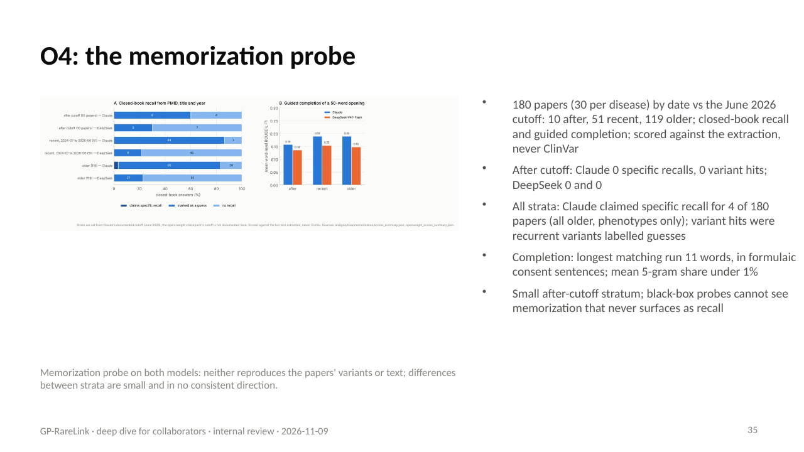
Slide 35. The bias arm has two parts. The memorization probe asks whether the model could be extracting facts it remembers from training rather than facts it reads. 180 papers, thirty per disease, were stratified by publication date against the model's documented training cutoff of June 2026: 10 after, 51 recent, 119 older. Two black-box probes ran identically on both models: closed-book recall from the PMID, title and year, and guided completion of a fifty-word opening, scored against the full-text extraction, never against ClinVar. In the 10 post-cutoff papers neither model produced a specific recall or a correct variant. Across all strata Claude claimed specific recall for 4 of 180 papers, all older and for phenotypes only; the few variant hits were recurrent variants labelled as guesses. The completions with longer matching runs are formulaic consent sentences. The probe is small and will grow as post-cutoff papers accumulate, and black-box probes can miss memorization that changes extraction without surfacing as recall. But it gives no sign of memorization.
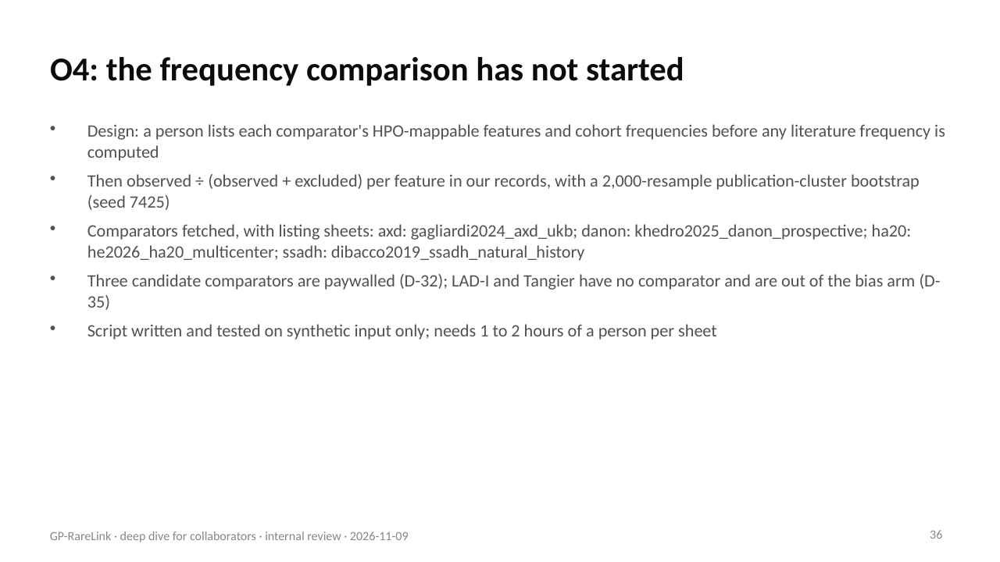
Slide 36. The second part of the bias arm, the frequency deviation, has no numbers yet. The design is simple and deliberately human-first: for each disease, a person lists the held-out natural-history cohort's HPO-mappable features and their cohort frequencies, without looking at our literature frequencies; only then does a script compute observed over observed plus excluded per feature in our records, with a publication-cluster bootstrap, and report the deviation. 4 open comparators are fetched and a listing sheet exists for each: A20 haploinsufficiency, Alexander disease, Danon disease and SSADH deficiency. Three candidate comparators are paywalled and left out, and LAD-I and Tangier disease have no comparator, so they are out of the bias arm by decision. The script is written and tested on synthetic input only. What it needs is one to two hours of a person per sheet.
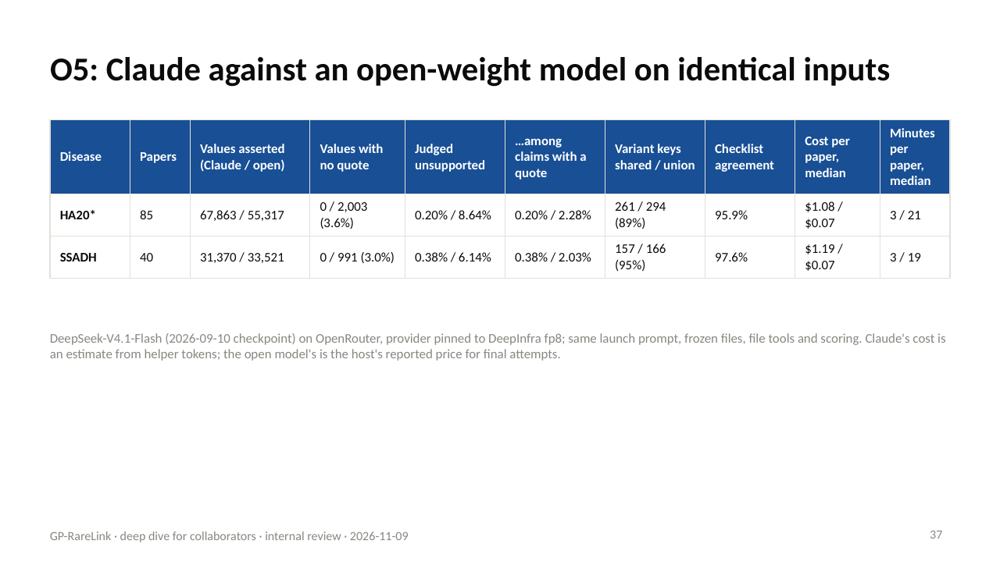
Slide 37. The efficiency outcome. Expert-minutes per accepted record cannot be measured until adjudication starts. The model comparison is done for two diseases: DeepSeek V4.1 Flash, an open-weight model, ran the same 85 A20 and 40 SSADH papers with the same launch prompt, frozen instruction files and schema, through an agent loop with file tools; the outputs went through the same span check, reconciliation, normalization and harness, and the same gatekeeper judged both runs. The two models found largely the same variants: 261 of 294 in the union for A20, 157 of 166 for SSADH. The open model cost about one 15th as much per paper and took 7 times as long. Where it differed was provenance. Claude left no value without a quote; the open model left 3.6 and 3.0 percent without one, which the rules forbid. The gatekeeper judged 8.6 and 6.1 percent of its claims unsupported, against 0.20 and 0.38 for Claude.
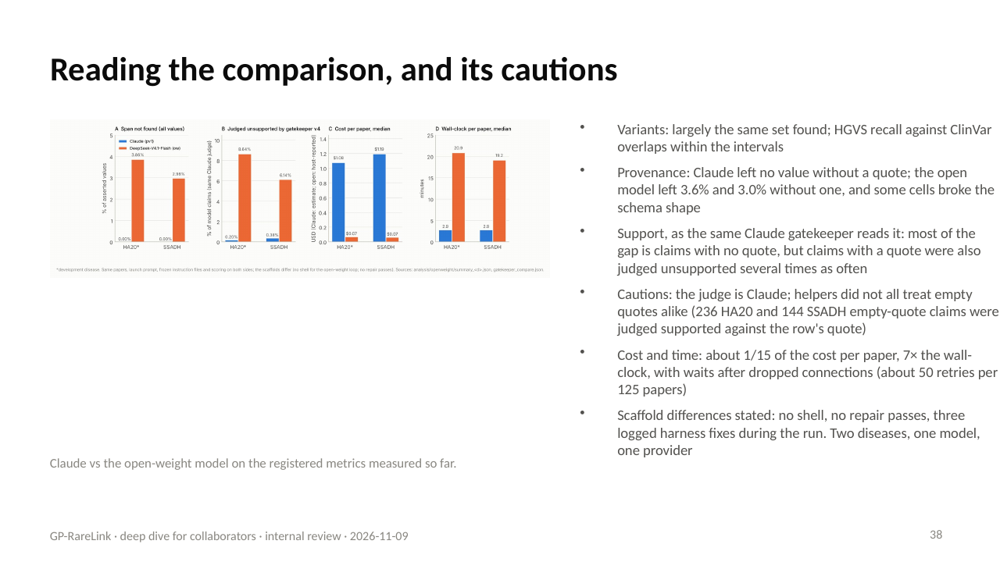
Slide 38. Three readings and two cautions. The readings: the method transfers, in that a much cheaper model finds the same variants; the provenance rules bind differently on different models, in that the open model drops quotes the rules require; and quote-level provenance is the cheapest place to see the difference. Most of the gap in unsupported rates is claims with no quote at all, but claims with a quote were also judged unsupported several times as often. The cautions: the judge is Claude, which may not be neutral between a Claude and a non-Claude extraction, and the gatekeeper helpers did not all treat empty quotes the same way. The registered measure is a blinded human audit of equal samples from each model, and it waits on the same panel decision as the primary audit. The scaffolds also differed slightly, as the plan requires us to state: the open-weight loop had no shell and no repair passes, and three harness fixes landed during its run, approved and logged. Two diseases, one model, one provider: not a general finding.
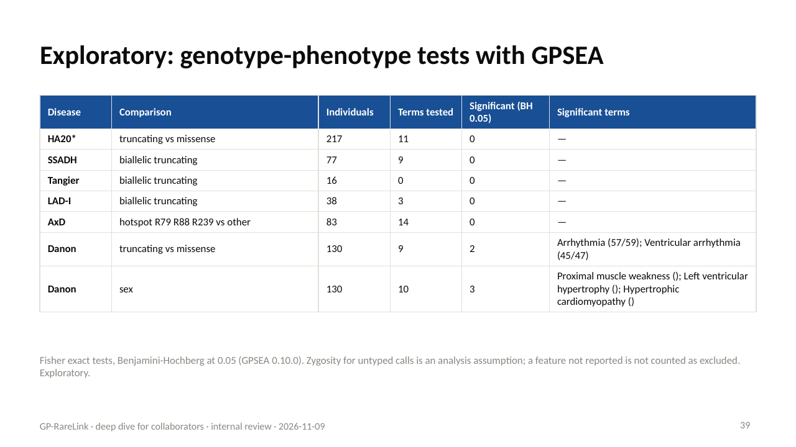
Slide 39. Two exploratory analyses, flagged as such. First, genotype-phenotype tests with GPSEA, Fisher exact tests with Benjamini-Hochberg correction, in a separate project. Variant effects come from each phenopacket's own normalized HGVS, only individuals with a placed variant and at least one phenotype enter, and zygosity for untyped calls is an analysis assumption only; the records keep not reported. In A20 haploinsufficiency, Alexander disease, SSADH deficiency and LAD-I, no term survives correction, and Tangier has too few phased genotypes to test. Danon disease reproduces the published sex difference: males, who are hemizygous, far more often show proximal muscle weakness and left ventricular hypertrophy than heterozygous females. The papers overlap with the published series, so this is a reproduction check, not an independent replication, and the truncating-versus-missense arrhythmia signal rests on a handful of missense carriers and is a lead only.
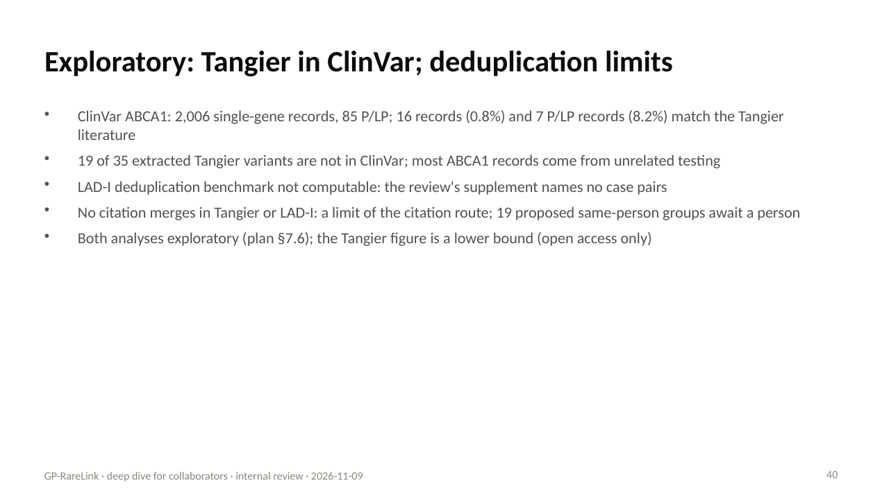
Slide 40. Second, a look at what ClinVar's ABCA1 record actually contains. Of 2,006 single-gene ABCA1 records in ClinVar, only 16 match variants extracted from the thirty-one Tangier papers, and of the 85 pathogenic or likely pathogenic records, 7. Most of the gene's ClinVar records come from testing unrelated to Tangier disease. Separating the monogenic allelic series from that noise is itself one of the tests the grant proposed, and it is a lower bound because the corpus is open access only. Two negative results on deduplication. The planned LAD-I benchmark against the duplicate cases in Almarza Novoa 2018 is not computable: the review's open supplement flags only one overlap and names no case pairs. And the citation-only merge route found no merges at all in Tangier and LAD-I, which is more likely a limit of the route than a fact about those literatures; the dossier helpers later proposed nineteen same-person groups across the candidates, which await a person.
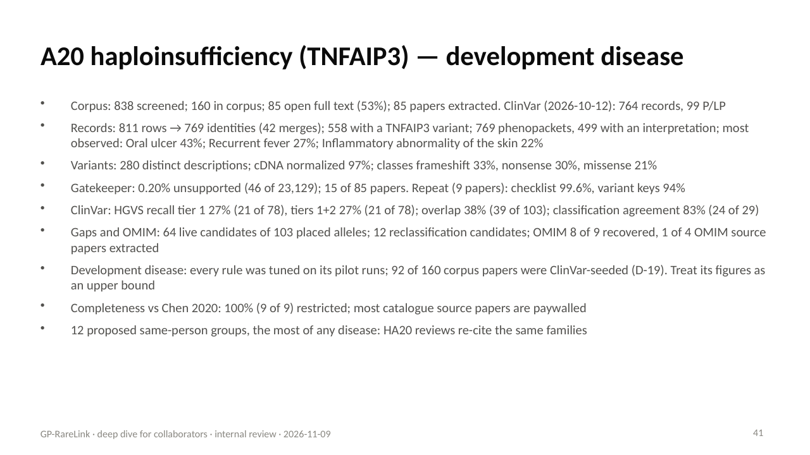
Slide 41. A20 haploinsufficiency. 838 records screened, 160 in the corpus, 85 with open full text, 85 papers extracted. 811 rows became 769 identities, 558 with a variant in the gene; the most observed features are Oral ulcer 43 percent; Recurrent fever 27 percent; Inflammatory abnormality of the skin 22 percent. The gatekeeper judged 0.20 percent of claims unsupported. Against ClinVar, HGVS recall at tiers one and two was 27 percent, 21 of 78 and overlap 38 percent, 39 of 103. 64 candidates are absent from both databases, and 89 percent, 8 of 9 of OMIM's listed variants were recovered. Development disease: every rule was tuned on its pilot runs; 92 of 160 corpus papers were ClinVar-seeded (D-19). Treat its figures as an upper bound Completeness vs Chen 2020: 100 percent (9 of 9) restricted; most catalogue source papers are paywalled.
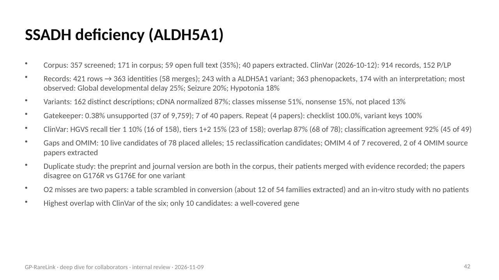
Slide 42. SSADH deficiency. 357 records screened, 171 in the corpus, 59 with open full text, 40 papers extracted. 421 rows became 363 identities, 243 with a variant in the gene; the most observed features are Global developmental delay 25 percent; Seizure 20 percent; Hypotonia 18 percent. The gatekeeper judged 0.38 percent of claims unsupported. Against ClinVar, HGVS recall at tiers one and two was 15 percent, 23 of 158 and overlap 87 percent, 68 of 78. 10 candidates are absent from both databases, and 57 percent, 4 of 7 of OMIM's listed variants were recovered. Duplicate study: the preprint and journal version are both in the corpus, their patients merged with evidence recorded; the papers disagree on G176R vs G176E for one variant O2 misses are two papers: a table scrambled in conversion (about 12 of 54 families extracted) and an in-vitro study with no patients.
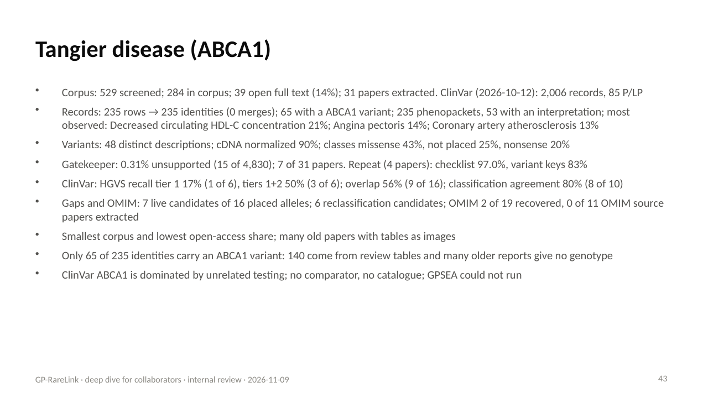
Slide 43. Tangier disease. 529 records screened, 284 in the corpus, 39 with open full text, 31 papers extracted. 235 rows became 235 identities, 65 with a variant in the gene; the most observed features are Decreased circulating HDL-C concentration 21 percent; Angina pectoris 14 percent; Coronary artery atherosclerosis 13 percent. The gatekeeper judged 0.31 percent of claims unsupported. Against ClinVar, HGVS recall at tiers one and two was 50 percent, 3 of 6 and overlap 56 percent, 9 of 16. 7 candidates are absent from both databases, and 11 percent, 2 of 19 of OMIM's listed variants were recovered. Smallest corpus and lowest open-access share; many old papers with tables as images Only 65 of 235 identities carry an ABCA1 variant: 140 come from review tables and many older reports give no genotype.
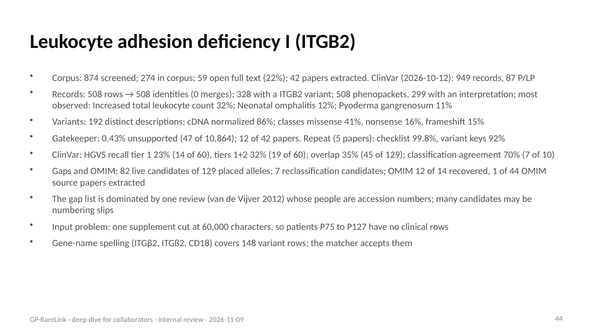
Slide 44. Leukocyte adhesion deficiency I. 874 records screened, 274 in the corpus, 59 with open full text, 42 papers extracted. 508 rows became 508 identities, 328 with a variant in the gene; the most observed features are Increased total leukocyte count 32 percent; Neonatal omphalitis 12 percent; Pyoderma gangrenosum 11 percent. The gatekeeper judged 0.43 percent of claims unsupported. Against ClinVar, HGVS recall at tiers one and two was 32 percent, 19 of 60 and overlap 35 percent, 45 of 129. 82 candidates are absent from both databases, and 86 percent, 12 of 14 of OMIM's listed variants were recovered. The gap list is dominated by one review (van de Vijver 2012) whose people are accession numbers; many candidates may be numbering slips Input problem: one supplement cut at 60,000 characters, so patients P75 to P127 have no clinical rows.
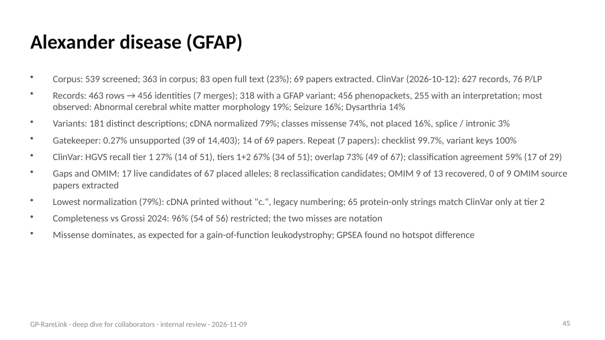
Slide 45. Alexander disease. 539 records screened, 363 in the corpus, 83 with open full text, 69 papers extracted. 463 rows became 456 identities, 318 with a variant in the gene; the most observed features are Abnormal cerebral white matter morphology 19 percent; Seizure 16 percent; Dysarthria 14 percent. The gatekeeper judged 0.27 percent of claims unsupported. Against ClinVar, HGVS recall at tiers one and two was 67 percent, 34 of 51 and overlap 73 percent, 49 of 67. 17 candidates are absent from both databases, and 69 percent, 9 of 13 of OMIM's listed variants were recovered. Lowest normalization (79 percent): cDNA printed without "c.", legacy numbering; 65 protein-only strings match ClinVar only at tier 2 Completeness vs Grossi 2024: 96 percent (54 of 56) restricted; the two misses are notation.
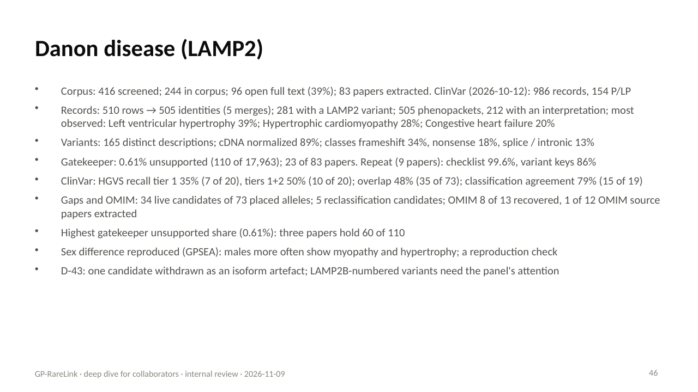
Slide 46. Danon disease. 416 records screened, 244 in the corpus, 96 with open full text, 83 papers extracted. 510 rows became 505 identities, 281 with a variant in the gene; the most observed features are Left ventricular hypertrophy 39 percent; Hypertrophic cardiomyopathy 28 percent; Congestive heart failure 20 percent. The gatekeeper judged 0.61 percent of claims unsupported. Against ClinVar, HGVS recall at tiers one and two was 50 percent, 10 of 20 and overlap 48 percent, 35 of 73. 34 candidates are absent from both databases, and 62 percent, 8 of 13 of OMIM's listed variants were recovered. Highest gatekeeper unsupported share (0.61 percent): three papers hold 60 of 110 Sex difference reproduced (GPSEA): males more often show myopathy and hypertrophy; a reproduction check.
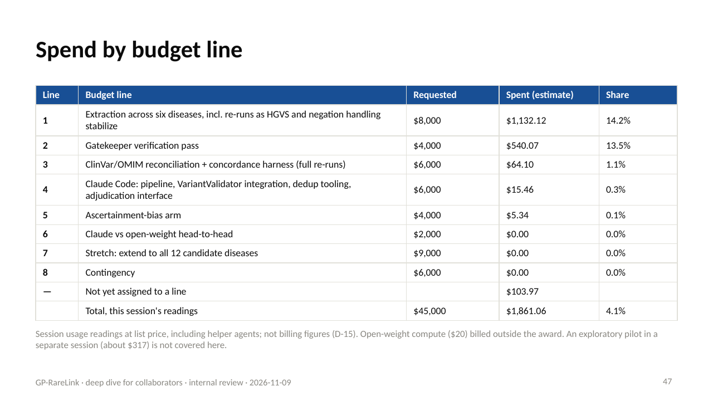
Slide 47. Spend. By this session's own usage readings, about 1,861 dollars of the 45,000 dollar award had been used by 2026-10-24, about four percent. Extraction and the gatekeeper account for most of it. The readings are estimates, not billing figures: they sometimes froze for an hour, stages overlapped, and whether this session runs on the funded account is still being confirmed. Measured unit costs on this route: about two dollars per paper for extraction and under half a cent per judged claim for the gatekeeper; the six-disease run with its ten percent repeat came in well under its 1,200 dollar ceiling. The open-weight compute was billed outside the award, about 20 dollars. A separate exploratory pilot in another session cost about 317 dollars and is not covered in this talk. The large remaining costs of the project are human hours, which the award does not fund.
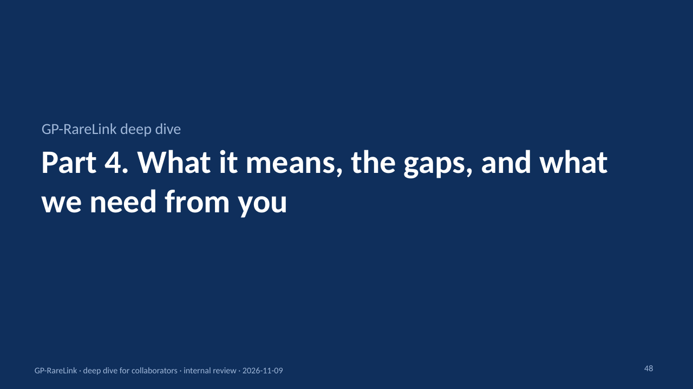
Slide 48. Part four. What it means, the gaps in the study, and what we need from you.
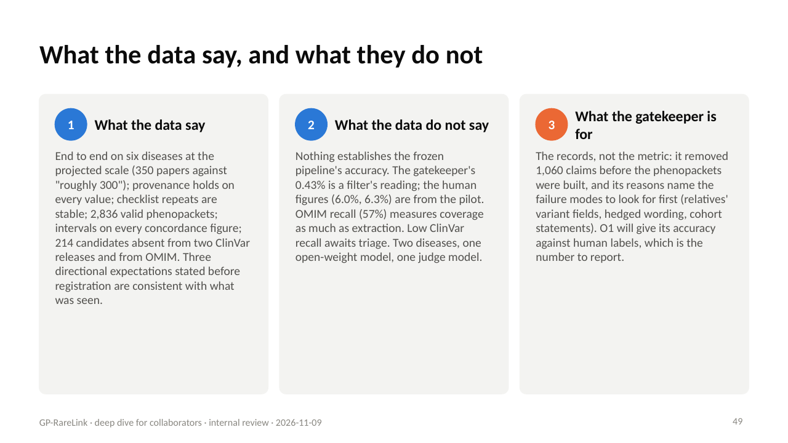
Slide 49. What the data say. The pipeline runs end to end on six diseases at the scale the grant projected, with provenance that holds on every value and repeats that are stable where the schema fixes the vocabulary. It produces 2,836 valid phenopackets, a ClinVar comparison with intervals on every figure, an OMIM check against a human-curated holdout, and 214 candidate gaps that two successive ClinVar releases confirm are absent. What the data do not say: nothing here establishes the accuracy of the frozen pipeline. The gatekeeper's figure is a filter's reading; the only human-rated figures come from the pilot, before the rules those audits produced were frozen. Against OMIM the run recovered 57 percent of the listed variants, but the misses are mostly papers the pipeline could not read, so that figure measures corpus coverage as much as extraction. The gatekeeper's value is in the records, not the metric: it removed 1,060 claims before the phenopackets were built, and its reasons name the failure modes a person should look for first.
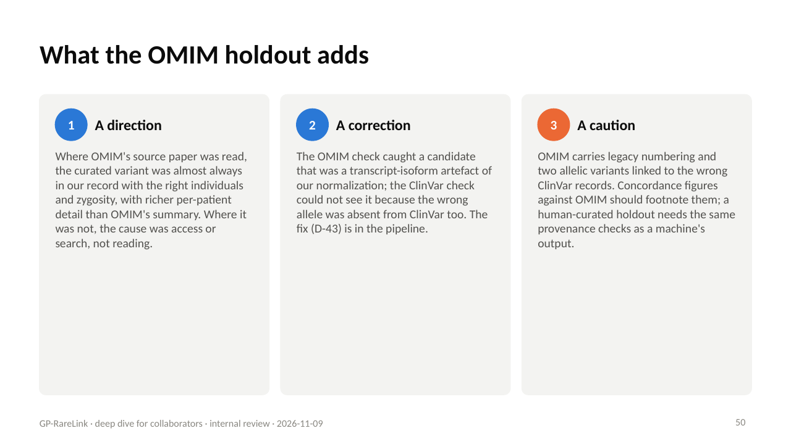
Slide 50. The OMIM holdout gave three things the ClinVar scoring could not. A direction: where OMIM's source paper was in the run, the curated variant was almost always in our record with the right individuals and zygosity, and the per-patient detail was richer than OMIM's summary; where it was not, the cause was access or search, not reading. A correction: the OMIM check caught a candidate that was a transcript-isoform artefact, which the ClinVar check could not see because the wrong allele was absent from ClinVar too; the fix is now in the pipeline. And a caution: OMIM itself carries legacy numbering and two allelic variants linked to the wrong ClinVar records, so any concordance figure against OMIM should footnote them, and a holdout curated by people deserves the same provenance checks as our output.
Slide 51. The report lists nineteen gaps, each with what it blocks, who acts, and a rough cost. The first six need people, not models. The primary audit is unrated: two panel members rate 250 claims, roughly ten to fifteen hours each, and a third breaks ties; it unlocks the only confirmatory outcome and the gatekeeper's accuracy against human labels. OMIM's phenotype half is unassessed: freezing the six clinical synopsis pages and one harness run would close it. The 214 candidates are unadjudicated: ten to fifteen minutes each. The fifty ClinVar misses await triage: two to four hours. The blinded open-weight audit needs the same raters. And the bias arm needs four comparator sheets, one to two hours each.
Slide 52. The remaining gaps are about access, inputs, notation and bookkeeping. Open access only leaves fourteen to fifty-three percent of each corpus readable, so completeness and the gap count are lower bounds; adding institutional access would be a deviation and a re-run of a few hundred papers at about two dollars each. Three extraction gaps were frozen on purpose and should wait for the audit's number: no hedge rule, relatives' variant fields from the proband's sentence, and cohort statements applied to individuals. About ten papers had conversion problems, and notation issues like legacy numbering and variants stated only in prose block tier-one matching. Thirty-eight of the eighty-four papers OMIM cites for its variants were never returned by our searches because they use pre-gene-era disease names, a search-term gap. And several bookkeeping items wait on the principal investigator: the pre-registration tags and OSF registration, the budget reconciliation, and the drafted messages to Monarch and ClinVar.
Slide 53. The recommended order puts the no-cost human steps first and holds any change to the frozen pipeline until the audit gives a measured failure rate. Step one: settle the panel and share the audit pages, drawing the open-weight audit sample at the same time. Step two: freeze the OMIM synopsis pages or submit the API request, push the pre-registration tags, register on OSF, send the drafts; no cost, long lead times. Step three: triage the fifty ClinVar misses and the LAD-I candidates first, because they tell us whether low recall and the biggest gap list are real before the panel spends hours on them. Step four: the small human tasks that each unblock a registered figure, the comparator sheets, the checklist maps, the merge groups. Only after the audit reads: decide on version seven and a re-run, the input repairs, the notation repairs and the historical-name re-search. Then the panel adjudicates the remaining candidates, and submissions follow sign-off. Steps one to four cost no model spend and about sixty to one hundred and ten panel hours in all.
Slide 54. The limitations, stated as the report states them. There is no human-rated accuracy for the frozen pipeline; every support figure is a model's reading of a model's output. The development disease is in every table, flagged, but its rules were tuned on its own papers. OMIM is a sample and only its variant half is in; the patient-level comparison was judged by Claude, not a panel member. Open access only: the corpora hold fourteen to fifty-three percent of the eligible literature. Cost figures are session estimates with frozen readings and overlapping stages. Helper-reported problems are model output, recorded as such and not verified by a person. And one more, which the report states about itself: the author of the report is the pipeline's author. Claude Code built the pipeline, ran it, and generated the report and this talk from its outputs. The numbers are reproducible from the committed files; the framing is not independent of the system it describes. That is one more reason the human audit decides.
Slide 55. Which brings us to you. Four roles, each unlocking a registered result or a deliverable. Audit raters: rate 250 extracted values against their quoted evidence on a blinded web page, two raters and a tie-breaker, ten to fifteen hours each; this is the primary outcome and the first true accuracy figure. Adjudicators: review the 214 candidate variants from their dossiers and decide whether the evidence supports a submission, ten to fifteen minutes per candidate; this is the gap-closure deliverable. Cohort readers: fill a comparator sheet of clinical-feature frequencies from a natural-history paper without looking at our records, one to two hours per sheet; this is the bias arm. And methods or domain reviewers: read the paper or the report and tell us what is wrong, missing or unclear from your field's point of view. Everything is published literature; there is no patient data. The dashboard has a short form where you can tell us who you are and how you would like to contribute.
Slide 56. Thank you for listening. Everything in this talk, the short paper, the full report and its supplement, this deck with its notes, the candidate list and the form, is on the dashboard. Every number traces to a file in the project repository at a stated commit, and the report says plainly which questions are still open: the human audit, the access decision, and the adjudication of the candidates. We look forward to working with you.